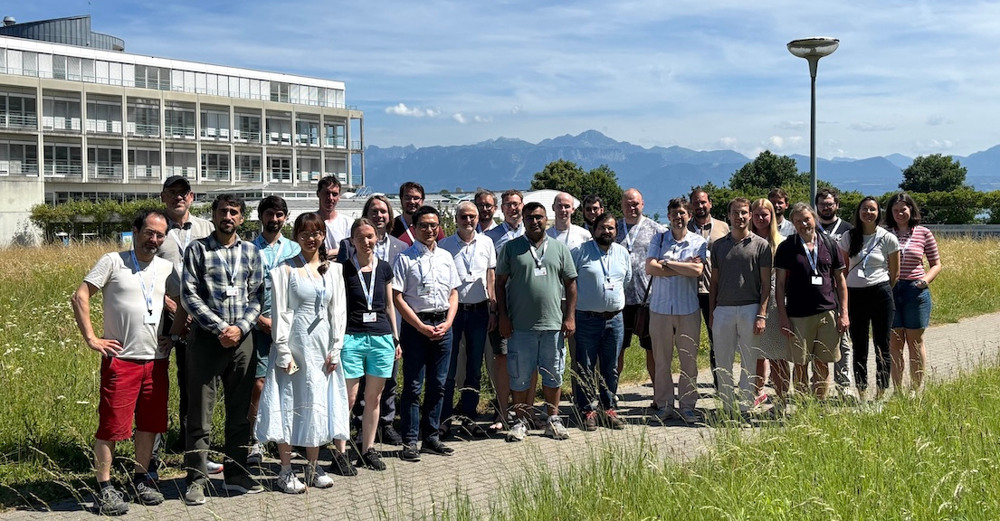
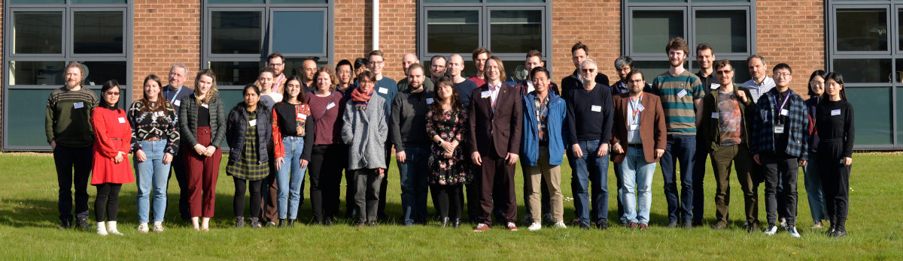

Events
Conferences, workshops, summer schools and seminars organised or hosted by the Data Driven Materials and Molecular Science group.
Workshops
-
2026
46th CCP5 Annual General Meeting and Conference
Co-organiser: Alin Elena · CCP5 Annual MeetingThe 46th Annual General Meeting and Conference of CCP5 (University of Edinburgh, 9–11 September 2026), bringing together the community to showcase research and software developments in molecular and materials simulation.
-
2026
The Atomic Simulation Environment: Integration into Wider Community Projects
Co-Organiser: Alin Elena · CECAM Flagship WorkshopA CECAM Flagship Workshop at CECAM-DE-SMSM (Mainz, Germany, 15–19 June 2026) bringing together developers of electronic structure codes and community packages built on ASE to test core redesigns, plugin architectures, and ensure compatibility for ASE v4.

-
2026
ESL Workshop 11: Connecting Library Developers and Technologies
Co-organiser: Alin Elena · CECAM / ESL WorkshopThe 11th Electronic Structure Library (ESL) workshop held in Zaragoza, Spain (9–11 February 2026), bringing together developers of shared computational libraries, electronic structure codes, and community organisations to coordinate library interfaces, integration technologies, and curated open-source tooling.
-
2025
Quantum Computing in Materials and Molecular Sciences
Co-organiser: Alin Elena · Royal Society Scientific Discussion MeetingA Royal Society Scientific Discussion Meeting at the Royal Society (London, UK, 6–7 October 2025) bringing together researchers and industry leaders in quantum computing, computational materials science, chemistry, and life sciences to evaluate current limitations and future opportunities.
-
2025
45th CCP5 Annual General Meeting and Conference
Co-organiser: Alin Elena · CCP5 Annual MeetingThe 45th Annual General Meeting and Conference of CCP5 held at the University of Liverpool (8–10 September 2025), celebrating research and software advances in molecular modeling, sponsored by CCP5, the Henry Royce Institute, and the RSC Statistical Mechanics & Thermodynamics Group.
-
2025
The Atomic Simulation Environment Ecosystem: Present and Perspectives
Co-Organiser: Alin Elena · CECAM Flagship WorkshopA CECAM Flagship Workshop at CECAM-HQ (EPFL, Lausanne, Switzerland, 23–27 June 2025) bringing together core developers and users of the Atomic Simulation Environment (ASE) and its broader ecosystem to transition towards a distributed plugin architecture, community governance, and sustainable interoperability.

-
2024
44th CCP5 Annual General Meeting and Conference
Co-organiser: Alin Elena · CCP5 Annual MeetingThe 44th Annual General Meeting and Conference of CCP5 held at the University of Sheffield (4–6 September 2024), sponsored by CCP5 and the RSC Statistical Mechanics & Thermodynamics Group, showcasing research from across the UK and international molecular simulation community.
-
2024
Electronic Structure Software Development: Advancing the Modular Paradigm
Co-organiser: Alin Elena · CECAM Flagship WorkshopA CECAM Flagship Workshop and the 10th ESL workshop held at CECAM-HQ (EPFL, Lausanne, Switzerland, 19–24 February 2024), focusing on modular electronic structure software development, shared community libraries (such as libxc, ELPA, Wannier90, spglib, and ELSI), robust interfaces, and sustainable software practices for modern HPC architectures.
-
2023
Open Science with the Atomic Simulation Environment
Co-Organiser: Alin Elena · CECAM Flagship WorkshopA CECAM Flagship Workshop held at STFC Daresbury Laboratory (24–28 April 2023), supported by CECAM, Psi-k, CCP5, CCP9, the Ada Lovelace Centre, and PSDI, featuring research talks, hands-on tutorials for reproducible calculations with ASE, and developer code sprints.
